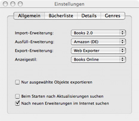

Der Reiter „Allgemein”
Das Einstellungsfenster bietet Ihnen viele Möglichkeiten, Books an Ihre
persönlichen Bedürfnisse anzupassen. Dazu stehen Ihnen vier verschiedene
Reiter zur Verfügung. Allgemeine Einstellungen werden innerhalb
des Reiters „Allgemein” vorgenommen.

Import-Erweiterung
Klicken Sie auf das Menü neben dem Eintrag „Import-Erweiterung:”, um die Erweiterung auszuwählen, mit der standardmäßg Dateien in Books importiert werden sollen.
Ausfüll-Erweiterung
Klicken Sie auf das Menü neben dem Eintrag „Ausfüll-Erweiterung:”, um die Datenbank auszuwählen, die für das Automatische Ausfüllen kontaktiert werden soll.
Export-Erweiterung
Klicken Sie auf das Menü neben dem Eintrag „Export-Erweiterung:”, um die Erweiterung auszuwählen, mit der standardmäßg Dateien aus Books heraus exportiert werden sollen. Diese Dateien können dann an anderen Geräten oder in anderen Anwendungen genutzt werden.
Anzeigestil
Klicken Sie auf das Menü neben dem Eintrag „Anzeigestil:”, um das Design der Einträge zu ändern, die im Fenster Zusammenfassung angezeigt werden sollen.
Nur ausgewählte Objekte exportieren
Wenn Sie vor dem Eintrag „Nur ausgewählte Objekte exportieren” ein Häkchen setzen, dann werden wirklich nur diejenigen Bucheinträge an die Export-Erweiterung gesandt, die von Ihnen ausgewählt wurden. Es ist dann allerdings nicht mehr möglich, keine Bucheinträge auszuwählen, um die gesamte Bücherliste zu exportieren.
Beim Starten nach Aktualisierungen suchen
Wenn Sie vor dem Eintrag „Beim Starten nach Aktualisierungen suchen” ein Häkchen setzen, dann sucht Books bei jedem Start der Anwendung eigenständig nach Aktualisierungen. Sobald eine neue Version verfügbar ist, erhalten Sie eine Benachrichtigung. Wenn Sie das Häkchen nicht setzen, können Sie auch manuell über den Menüeintrag „Aktualisierung...” nach neuen Versionen suchen.
Nach neuen Erweiterungen im Internet suchen
Wir stellen regelmäßig aktualisierte und neue Erweiterungen über einen Server im Internet zur Verfügung. Diese Erweiterungen werden dann in der Erweiterungsverwaltung angezeigt, wenn Sie das Häkchen vor dem Eintrag „Nach neuen Erweiterungen im Internet suchen” setzen. Von der Erweiterungsverwaltung aus können Sie die jeweilige Erweiterung dann laden und installieren, ohne daß Sie Ihre Books-Version aktualisieren müssen.